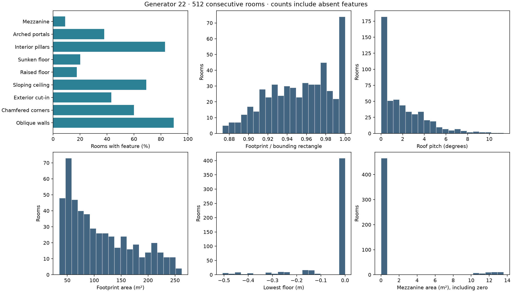
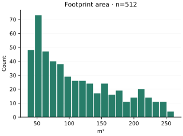
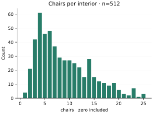
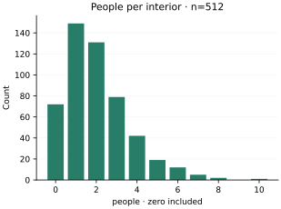
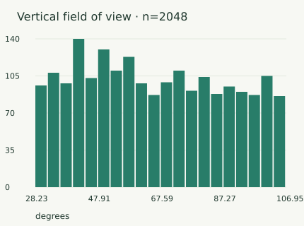
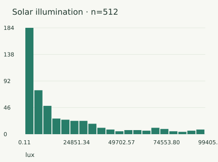
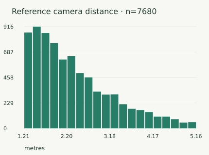
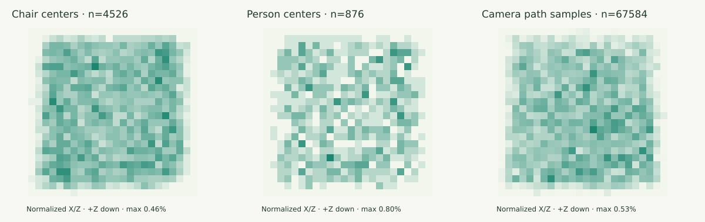

Generate furnished interiors with polygonal footprints, varied elevations and shared camera views. Inspect the geometry, rendered images and aligned annotations together.
Mezzanines with stairs, lowered and raised floors, cut-ins, tapered walls, chamfered corners and pitched ceilings. Explore the actual captures beside the program that built each room.
Current architectural captures: seeds 0–31, four cameras and two endpoints, captured with native shadows, SSAO and diffuse GI. The controls switch recorded views; they do not synthesize intermediate frames. Depth, normals and positions here are 8-bit display previews, with the original float32 alignment checks in each calibration download. Glass is the first geometric surface in annotations.
See all 32 consecutive rooms · camera 0 at t = 0 · no appearance filtering
Dark and sparsely furnished rooms remain in this complete contact sheet. Feature shortcuts above select structural examples; all 256 views remain accessible in the room selector.
02 / CURRENT ARCHITECTURAL POPULATION
512 room programs. One explicit denominator.
Consecutive seeds 0–511, without removing failures or difficult examples. All passed the recorded layout, support and camera-clearance checks. The first 32 rooms were also rendered in five aligned modes.
512consecutive rooms audited512 distinct structural signatures at 1 cm
256rendered camera/time views32 rooms × four cameras × two times
5 modesper captured viewRGB, depth, normal, semantic, position
Architectural programs selected by feature coverage from the 512-room population. Plans show actual footprint vertices and openings. They are diagrams, not RGB renders. Roof pitch, heights and all dimensions come from the serialized program.

Absolute feature frequencies and continuous parameter distributions; zero-feature rooms are retained. Features co-occur, so their room fractions do not sum to 100%.
Furnishings, lighting and cameras
the same 512-room population






Every panel states its observation count. Room and object counts include all 512 rooms; camera parameters have their own denominators. Photometry, geometry and placement are correlated samples, not independent dimensions.

Placement in normalized room X/Z coordinates, with +Z down. Each heatmap is normalized separately and reports its sample total; camera paths contribute 33 points per camera.
All 256 views passed the recorded annotation-alignment checks: maximum per-view depth/position p99 error 2.87 µm, reprojection p99 0.00264 pixels. Every view contains at least four semantic classes. All 18 rooms with people in the camera’s primary functional zone show person pixels in at least one view. Three of 22 rooms with people anywhere in the main envelope never show them.
These checks measure geometry and annotation consistency. They do not establish photographic realism, real-building frequency matching or ten-million-sample training utility. This cohort has 32 rendered rooms; the separately recorded 512-room camera-baseline render study is available below with its original identity.
The engine also exports camera-specific co-visibility, optical flow and motion vectors, and supports optional ARDY human motion. Their detailed illustrations remain available in the recorded reference studies.
The current architecture cohort above contains five render modes and two trajectory endpoints. It did not capture co-visibility, temporal flow or continuous video. The linked studies retain their earlier geometry and measurements.
Camera baseline
Five settings over the same geometry, four synchronized views, camera plans and measured shared surfaces.
The reference population includes 512 distinct rendered rooms and a matched 128-room baseline sweep. It is separate from the 512-program / 32-rendered-room architectural audit. Reference metrics and co-visibility distributions ↗
04 / TECHNICAL WHITEPAPER
Auditable procedural indoor data for multi-view reconstruction.
Mitchell Mosure · October 2026 · Technical report
The paper shows the current room envelopes, paired RGB and architectural plans, floor and roof variation, aligned annotation panels, and 512-room distributions. An explicitly separate reference section retains the camera-baseline and co-visibility experiments.
It reports a bounded generator evaluation. Photographic realism, ten-million-sample learning utility and downstream reconstruction gains remain open evaluation questions.
Compiled from this repository’s TeX paper. It describes current capabilities and separates the architectural audit from the recorded camera-baseline and motion studies. Source files, exact configurations and machine-readable measurements are downloadable. No publication venue or peer-review status is implied.
MAKE YOUR OWN CAPTURES
Start with shared views.
One seeded room, four cameras, RGB and matched geometry. Human motion is optional; this command does not initialize motion models.
Also available: primitive-object scenes, Cornell cube, room and semantic-room scenes, and standalone humans. The native CLI writes datasets; the WebGPU app is an interactive viewer.